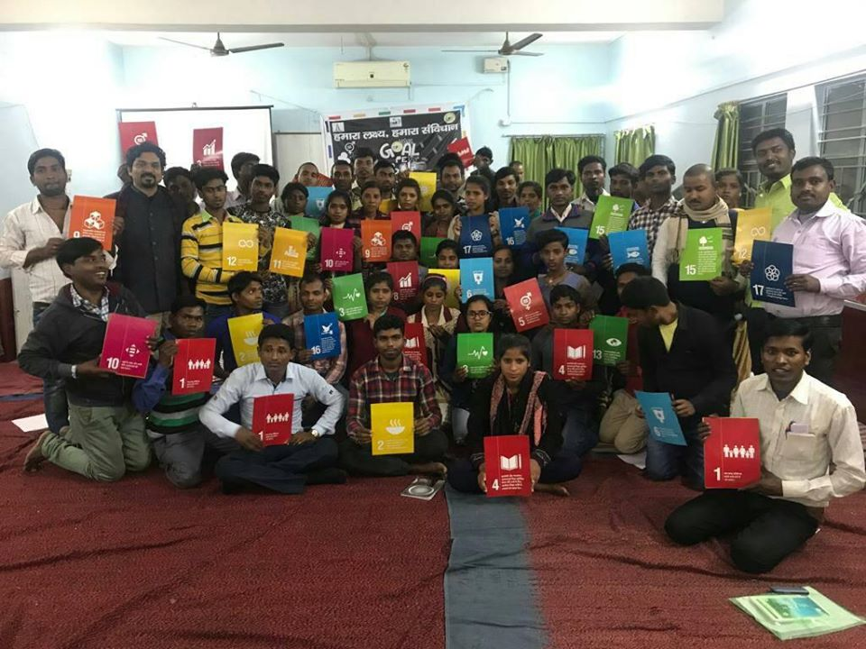
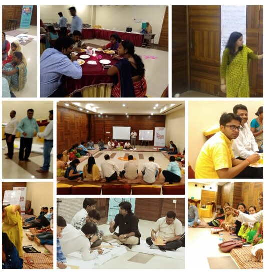
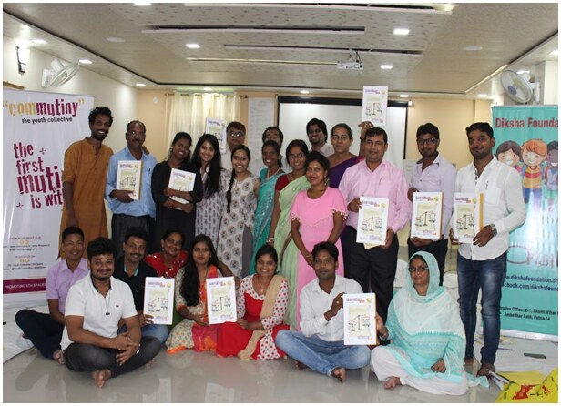

Project archive · 2018–2020 · Completed
Bihar Youth Collective
Bihar Youth Collective brought together organisations working with adolescents in different districts of Bihar. They met as a state group and used a common toolkit in their own programmes and communities.
Working with ComMutiny – The Youth Collective, Diksha facilitated the Be A Jagrik toolkit with 11 member organisations. We also used it directly with 250 adolescents.
Read the project record
Why a collective
Member organisations met to work on adolescent participation.
Each organisation already worked with adolescents in its own district. The Collective gave them time to compare what they were doing and plan work together.
The 2019–20 annual report records 11 member organisations from 11 UNICEF priority districts, where child marriage rates were high. The group worked on how adolescents could participate more fully in their communities and engage with local duty bearers.
Part of the work was organisational. Members discussed the values and structure of the state group, including how decisions and responsibility would be shared.

Diksha’s role
Diksha facilitated Be A Jagrik with the member organisations.
Member organisations used the same material with adolescents in their own areas. They could relate the activities to the places and people the young participants knew.
Meetings also gave members time to examine their own practice: how they involved adolescents, what participation looked like in their programmes and how responsibility could be shared across the Collective.
The earlier website says 12 organisations were initially finalised. The 2019–20 annual report records implementation with 11 member organisations, which is the figure used on this page.
Be A Jagrik
The toolkit brought the Constitution into situations young people recognised.
Be A Jagrik used the Indian Constitution and the Sustainable Development Goals as material for discussion and action. Adolescents looked at rights and duties, spoke about situations in their communities and considered how to engage with local duty bearers.
During 2019–20, Diksha used the toolkit directly with 250 adolescents. The same toolkit was facilitated through the 11 member organisations. A separate archive page records Diksha’s earlier Jagrik project from 2016 to 2018.
Across the state
The statewide target was 30,000 adolescents.
This was the proposed scale for the network as a whole. It was not reported as a completed participation figure.
That number describes the scale the Collective hoped to reach through its network. The available public reports do not confirm 30,000 completed participants. They do confirm Diksha’s direct work with 250 adolescents and implementation with 11 member organisations.
The reports do not preserve a district-by-district participation count or the names of all member organisations. Those gaps remain part of the public record.

Reading the archive carefully
The work is documented in two annual reports.
Bihar Youth Collective appears in Diksha’s 2018–19 and 2019–20 annual reports. It is not presented as a continuing programme in the 2020–21 report, so this archive records the project period as 2018 to 2020.
The surviving record explains the network, Diksha’s facilitation role and the participation figures above. It does not contain a follow-up study showing what continued in each district after the formal project period.
Project partnership
ComMutiny – The Youth Collective and Diksha Foundation
ComMutiny – The Youth Collective worked with Diksha to establish and strengthen Bihar Youth Collective. Member organisations carried the work into their districts. Diksha facilitated the shared toolkit and worked directly with adolescents.
The source record
Read Diksha’s annual reports.
The 2018–19 and 2019–20 reports preserve the Collective’s work, photographs and participation figures.